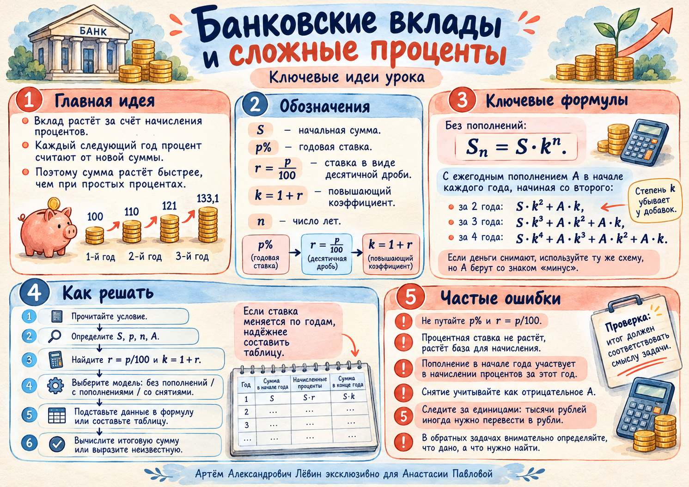

Урок · 19 октября 2026
Банковские вклады и сложные проценты
Как увеличивается вклад при капитализации, что меняют пополнения и снятия и как восстановить первоначальную сумму по итоговому результату.
Постоянная ставка, без дополнительных операций. Каждый следующий год начисление происходит от новой суммы.
Что происходит с деньгами
Проценты на проценты
Вклад — сумма, размещённая в банке. При капитализации проценты в конце расчётного периода присоединяются к вкладу. Следующее начисление выполняется уже от увеличившейся суммы.
100 рублей под 10% годовых
| Год | Начало, ₽ | Начислено, ₽ | Конец, ₽ |
|---|---|---|---|
| 1 | 100 | 10 | 110 |
| 2 | 110 | 11 | 121 |
| 3 | 121 | 12,1 | 133,1 |
Ставка остаётся равной 10% все три года. Увеличивается сумма на вкладе: 100 → 110 → 121 → 133,1 рублей.
В цифровой лаборатории можно изменить ставку и проверить, как меняется итог.
Универсальная запись
Формула сложных процентов
S — первоначальная сумма; P — ставка в процентах; p = P / 100 — её десятичная запись; n — число лет; k = 1 + p — коэффициент увеличения.
Пример: 200 ₽ под 20% на три года. Тогда k = 1,2 и S3 = 200 · 1,23 = 345,6 ₽.
Второй и последующие годы
Пополнения в начале года
Пусть a — одинаковое пополнение в начале каждого года, начиная со второго. Деньги сначала вносят, затем начисляют проценты за текущий год.
| Год | Взнос, ₽ | Перед %, ₽ | Проценты, ₽ | Итог, ₽ |
|---|---|---|---|---|
| 1 | 0 | 100 | 10 | 110 |
| 2 | 20 | 130 | 13 | 143 |
| 3 | 20 | 163 | 16,3 | 179,3 |
Пример из занятия: S = 120 тыс. ₽, a = 10 тыс. ₽, P = 15%, n = 3. Итог:
Операция с противоположным знаком
Что происходит при снятии
Снятие учитывается как отрицательный взнос. В начале года сначала вычитают снимаемую сумму, затем начисляют проценты на оставшиеся деньги.
При S = 100 тыс. ₽, a = 5 тыс. ₽, P = 10%, n = 4 получаем:
Известна конечная сумма
Найти первоначальный вклад
Используйте ту же формулу для S3. Подставьте известный итог и выразите первоначальную сумму S.
Чётко разделяйте величины, которые даны в условии, и величину, которую требуется найти.
Ставка меняется
Таблица надёжнее шаблона
Если процентная ставка или величина взноса меняется от года к году, рассчитайте сумму последовательно.
Здесь a1 = 0, а каждый ai — взнос либо снятие со знаком минус в начале соответствующего года.
Самостоятельное закрепление
Путь А · 10 заданий
Условия соответствуют тренировочному блоку пособия. Попробуйте решить задачу самостоятельно, затем раскройте ответ. Для подробной письменной работы откройте PDF.
1. 200 ₽ под 20% на три года. Составьте таблицу ежегодных начислений.
Конец годов: 240; 288; 345,6 ₽. Начисления: 40; 48; 57,6 ₽.
2. Вклад 1500 ₽ под 8% на два года без пополнений.
1749,6 ₽.
3. Через три года при 10% годовых стало 1331 ₽. Найдите первоначальную сумму.
1000 ₽.
4. 100 тыс. ₽, ставка 10%, срок три года; в начале второго и третьего годов по 20 тыс. ₽.
179,3 тыс. ₽.
5. 200 тыс. ₽, ставка 20%, срок три года; два пополнения по 10 тыс. ₽.
372 тыс. ₽.
6. 120 тыс. ₽, ставка 15%, срок три года; два пополнения по 10 тыс. ₽. Ответ в рублях.
207 230 ₽.
7. 100 тыс. ₽, 10% на четыре года; три снятия по 5 тыс. ₽.
128 205 ₽.
8. 80 тыс. ₽, 5% на три года; два снятия по 10 тыс. ₽.
71 085 ₽.
9. За три года при 20% и двух пополнениях по 10 тыс. ₽ накоплено 173,28 тыс. ₽. Найдите S.
85 тыс. ₽.
10. 100 тыс. ₽; ставки 10%, 20%, 5%; во второй год +10 тыс. ₽, в третий −5 тыс. ₽.
145 950 ₽.
Ментальная карта занятия
Повторите основные обозначения и алгоритм решения по наглядной памятке.

